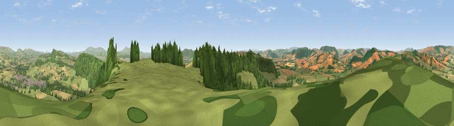

Viewpoint near Stokesay
#3378 in England · top 9% of its area beats it · near StokesayThe view, rendered

A 360° render of this exact spot computed from the terrain model, tree cover and land cover — summer colours, afternoon light, calibrated against photographs of famous viewpoints. Real trees, hedges and buildings will differ in detail.
The panorama
Grey silhouette: terrain skyline in each direction (720 bearings, Earth curvature and refraction included). Dashed green: skyline with trees (+15 m) and buildings (+8 m) as obstacles. Blue strip: how far the ground is visible on each bearing.
Where the view opens
Wedge length = distance to the farthest visible ground on that bearing (vegetation-aware). Rings at 10, 25 and 50 km.
What fills the view
52% grassland · 25% cropland · 22% woodland · 1% built-up
Angular shares of the visible panorama (visual magnitude), not map area. Landscape diversity 0.47 (0–1 Shannon).
Key numbers
More beautiful places nearby
The staircase of upgrades: each row has a higher view potential than everything closer. Driving times are estimates from straight-line distance, calibrated against real road routing — check an actual route before setting out.
| Place | Direction | Drive | Score |
|---|---|---|---|
| Viewpoint near Stokesay | SSE · 0 km | ~2 min | 75.0 |
| Burrow | WNW · 5 km | ~10 min | 79.4 |
| Viewpoint near Asterton | NNW · 8 km | ~17 min | 83.0 |
| Titterstone Clee | E · 17 km | ~30 min | 83.8 |
| The Lawley | NNE · 18 km | ~31 min | 85.8 |
| Viewpoint near Little Wenlock | NE · 34 km | ~52 min | 86.6 |
| North Hill | SE · 49 km | ~70 min | 86.8 |
| Worcestershire Beacon | SE · 50 km | ~71 min | 87.1 |
52.42348, -2.84956 · source: screening · position refined by local search. Computed location — check access rights before visiting.